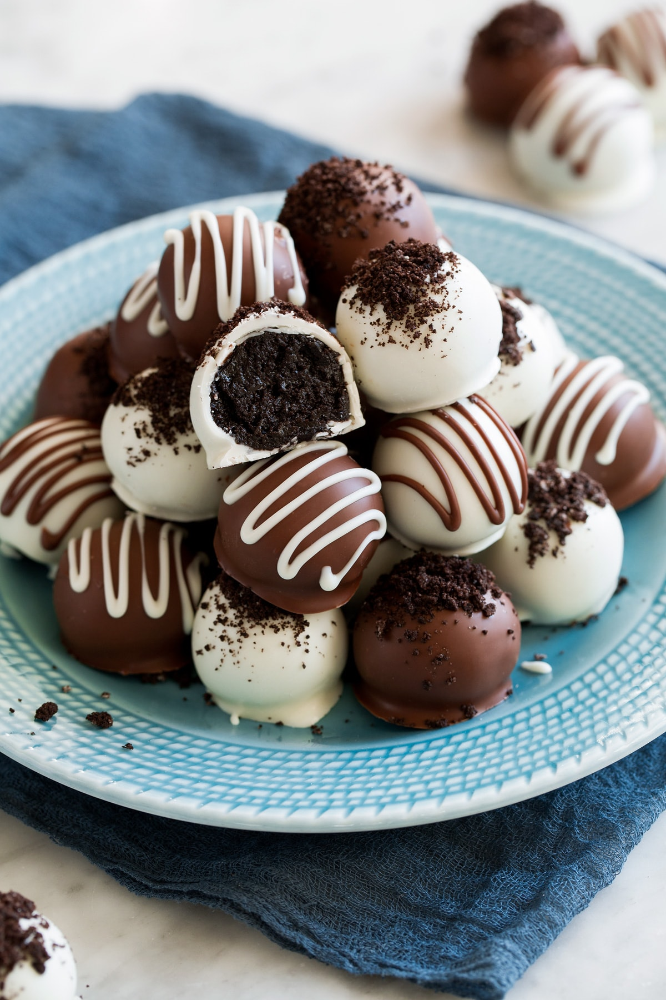

Oreo Balls

Delicious and chocolate covered!
These are oreo truffles in the shape of a ball.
They taste so good!
Ingredients
1 package cream cheese
36 oreo cookies, finely crushed
16 oz semi-sweet baking chocolate, melted
Steps
- Mix cream cheese and crushed cookies in a large bowl until well-blended.
- Use your hands to shape mixture into 48 (1-inch) balls; place on a tray and freeze until thoroughly chilled, about 10 minutes.
- Dip balls in melted chocolate; place in a single layer in a shallow waxed paper-lined pan.
- Refrigerate 1 hour or until firm. Store in a covered container in the refrigerator.